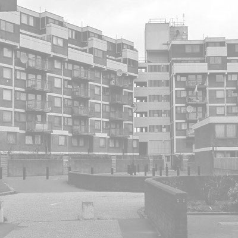

Test purpose
- Use the four canvases to display a separate image, defined in the DOM.
- Check that the `scrawl.createImageFromEntity` functionality works, and that we can capture and use blurred images created dynamically from the originals.
- Create four (radial) gradients, each with a transparent hole in the middle. We are testing the following values for CSS transparency:
- "transparent"
- "rgba(0,0,0,0)"
- "#00000000"
- "#0000"
- Check that all canvases display as expected, with in-focus areas of the image centred either on the mouse cursor, or in the middle of the canvas.
Known issue: generating the blurred images from the originals takes a very long time in some browsers (for example: Safari). once the images are generated, then the Demo should be performant across all browsers.
Annotated code
